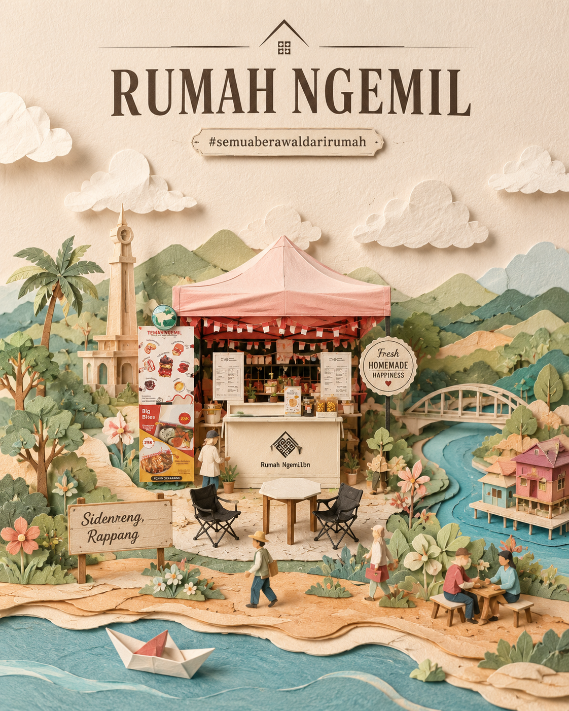

Sidenreng, Rappang
Rumah Ngemil
#semuaberawaldarirumah

Gulir untuk mendekat ke booth kami
01 — Masuk ke Rumah
Camilan yang lahir
di dapur sendiri.
Rumah Ngemil dimulai dari satu oven kecil, resep keluarga, dan kebiasaan berbagi camilan di ruang tamu. Semua yang kami jual pernah lebih dulu dibuat untuk orang rumah.
Kami memanggang dalam jumlah kecil setiap hari, membungkusnya dengan tangan, dan mengantarnya selagi masih hangat cerita — dari Sidenreng, Rappang, untuk meja makanmu.
— Keluarga Rumah Ngemil
02 — Yang Ada di Meja
Beberapa yang sedang hangat
Ketuk satu untuk melihatnya lebih dekat, atau buka menu lengkapnya.
03 — Dibuat dari Rumah
Freshly made. Homemade.
Made to be shared.
-
Bahan yang jujur
Mentega asli, telur segar, gula secukupnya. Tidak ada yang kami sembunyikan di balik label.
-
Dipanggang kecil-kecil
Setiap batch dibuat pagi hari dalam jumlah terbatas, supaya sampai ke kamu masih terasa baru.
-
Dibungkus dengan tangan
Dilipat, disegel, diberi catatan kecil. Seperti menyiapkan bekal untuk keluarga sendiri.
-
Untuk dibagi
Porsi kami pas untuk diedarkan di meja. Camilan paling enak saat ada yang menemani.
04 — Dari Sidenreng, Rappang
Sebuah rumah di
tepi Danau Sidenreng.
Kabupaten Sidenreng Rappang — orang menyebutnya Sidrap — adalah tanah lumbung padi di Sulawesi Selatan. Di sinilah dapur kami berada, di antara sawah, danau, dan angin sore yang tenang.
- Alamat
- Jam buka
- Pesan / tanya
05 — Pesananmu